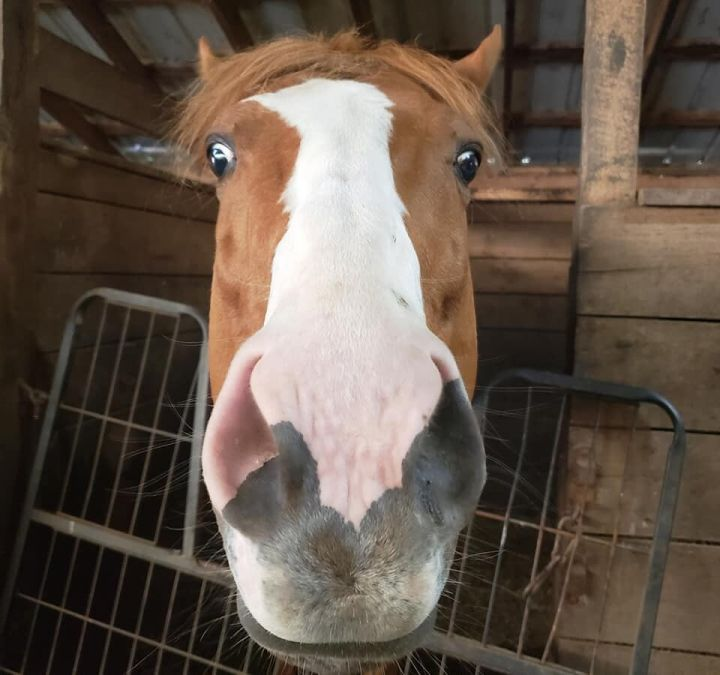

Horses to Adopt
|  |
Horse - Thoroughbred Adult - Male - Medium Chestnut / Sorrel Friendly, Energetic, Playful, Athletic Stallone is a 14 y/o gelding suitable for an intermediate rider. |
|
|
Horse - Quarterhorse Senior - Male - Medium White CARE Long Term Foster, Companion Horse Mr. Snuggles, aka "Snug" came to Lollypop Farm when his owner could no longer physically care for him. Snug foundered a few years ago, but recent xrays after he arrived show no rotation. He can be foot sore, so routine farrier work is important for him. Snug was trail ridden extensively his entire life, but was always anxious and spooky. Because of his feet, and extreme nervousness under saddle, Snug is ready to enjoy retirement. He is low-man on the totem pole in a herd, and has very good ground manners. He's an easy keeper, and enjoys grooming and attention. If you have a grass field, he will need a grazing muzzle to prevent future issues with founder. If you're looking for a snuggle buddy, please consider Mr. Snuggles! Suitable as a Companion Horse Only. |
|
|
Horse - Quarterhorse Adult - Female - Medium Brown, White Good for Advanced Intermediate, Good for Trainer, Riding Spirit came to us when her owner could no longer care for her. It was obvious upon her arrival that her previous owner showered her with love and care, and that is why she is such an amazing little horse. Spirit trained at Belmont to race, but never made it to the races. This mare is not your stereotypical "redheaded TB mare". She is sweet, easy going, and always well-behaved during her training sessions. Being away from her friends in the arena doesn't phase her. She lunges like a dream, and so far has been very willing under saddle. Spirit is still very young, and green, so will need a trainer or an Advanced-Intermediate rider working with a trainer to bring her to her full potential. |
|
|
Husky & German Shepherd Dog Mix Senior - Female - Medium Brown, Black, & White Good for Advanced, Good for Trainer, Riding This California-bred mare raced only a handful of times before retiring. She's not had much retraining since her race days, but is ready to go in whatever direction you'd like. She's a beautiful mover, and is a real looker. Deo would excel in a flatwork career, and possible occasional small jumping. Deo's head-mare in a herd, and gets very bonded to her friends. Her ideal adopter is somebody with a lot of experience retraining OTTB's, and somebody who has a true love of mares (as Deo defines the term "mare"). While Deo may be spunky and confident, she also enjoys people and attention. Deo's not the horse for the inexperienced or timid, but if you have the knowledge and the skills to bring a green horse along, you will find you have a great hidden treasure with Deo's Secret! |